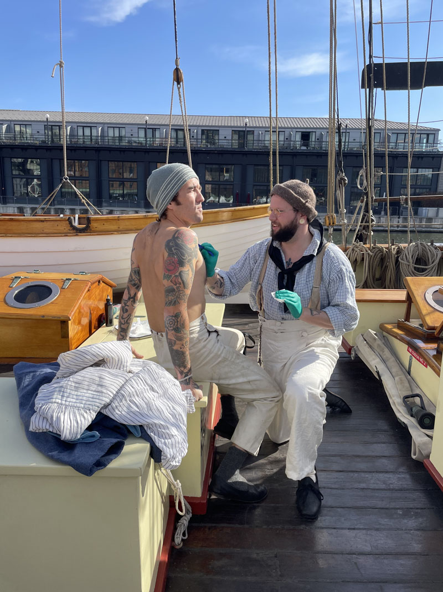

- 2024 -
Feb 10-11 - Guest spot at Acorn Tattoo, Salem, MA
Apr 3-5 - Guest spot at Studio Sans Regret, Montreal, QC
May 13-15 - Guest spot at Tiger Town, Brooklyn, NY
Jun 25 - Guest spot at Seaview Tattoo, Oak Bluffs, MA
Jul 1-2 - Guest spot at Acorn Tattoo, Salem, MA
Jul 24-24 - Guest spot at Tiger Town, Brooklyn, NY
Aug 20-21 - Guest spot at Seaview Tattoo, Oak Bluffs, MA
Sep 14 - Guest spot at Old Habits, London, UK
Sep 18 - Guest spot at 1770, Brighton, UK
Oct 14 - Interviewed on Preservecast No. 321 about the history of tattooing
Oct 26 - Sailabration: Sailing Traditions in Ink - Invited to do historic tattoo demonstrations aboard the Pride of Baltimore II, Baltimore, MD
Nov 13 - Guest spot at Electric Ceremony, Auckland, NZ
Nov 17 - Guest spot at Union Tattoo, Wellington, NZ
Nov 23-24 - Guest spot at NZ Tattoo Fest, New Plymouth, NZ
- 2023 -
Feb 20 - Interviewed on Preservecast No. 266 about hand poked tattooing
Apr 18-20 - Guest spot at Lowdown, Brooklyn, NY
Jun 12-14 - Invited to attend The American Historic Trades Summit representing hand poked tattooing, Providence, RI
Aug 16-19 - Guest spot at Troublebound, St. John’s, NL
Aug 23-26 - Guest spot at Outlaw Country, Halifax, NS
Oct 9-10 - Guest spot at Seaview Tattoo, Oak Bluffs, MA
Nov 7-8 - Guest spot at Banana Studio, Berlin, DE
- 2022 -
May 29-Jun 1 - Guest spot at Outlaw Country, Halifax, NS
Aug 29-31 - Artist in Residence at the Eric Sloane Museum, Kent, CT
